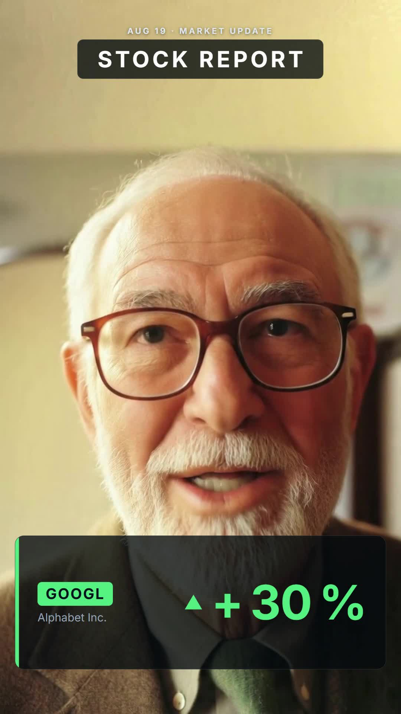
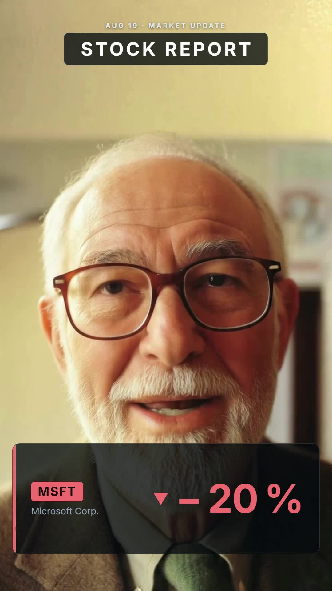
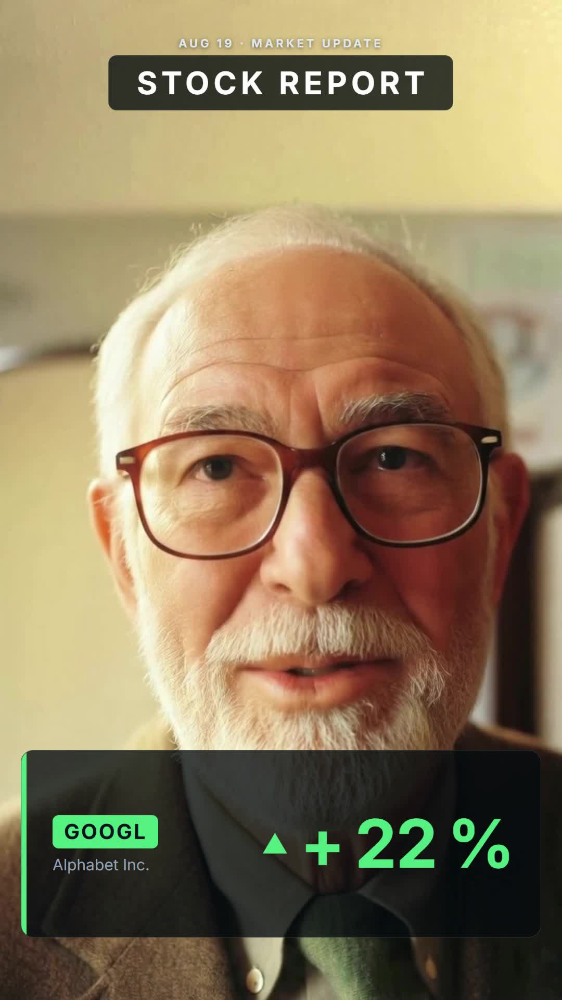
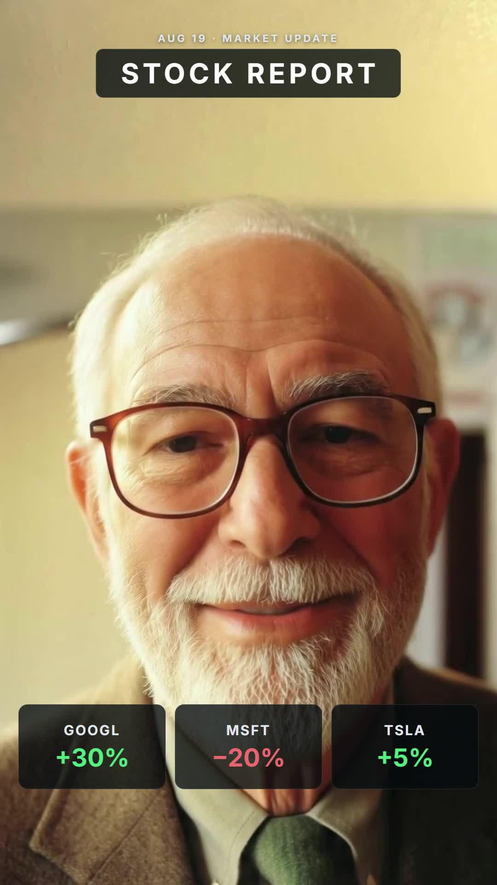

Development Journey — "Stock Report" motion-graphics overlay video
The four questions, answered straight
- Did you use HyperFrames?
- Yes. There is no Remotion skill in this harness. HyperFrames is the installed equivalent: it renders video from an HTML file. Its
/talking-head-recutworkflow is built for exactly this job — timed graphic cards over unchanged footage. Remotion and HyperFrames share the same core idea (declarative composition + seekable timeline + headless render); HyperFrames swaps React for plain HTML + GSAP. - How?
- Five stages: probe the video → transcribe speech to word-level timecodes → plan 5 cards in a storyboard → write the cards as HTML with one GSAP timeline → render headless Chrome frames to MP4. Section 2–4 below walk each stage.
- Did you use the SRT?
- Not the file itself.
stock_report.srt(made in the previous turn) has 3 clause-level cues. Card timing needs finer grain: the +30% count-up must fire at the instant the word "30%" is spoken (2.72s), not at the clause start (0.0s). So the pipeline re-transcribed to a word-leveltranscript.json. The SRT served as a content cross-check only. - Do you need the SRT?
- For this pipeline: no. HyperFrames consumes word-level JSON. The SRT format matters for a different workflow — the Claude Design method in
README.txt, where you paste an SRT into a prompt so graphics hold while you talk. The principle is identical in both: the transcript is the timeline. SRT is the human-readable coarse view; word JSON is the machine-grade fine view of the same data.
1. The brief — what was actually asked
The request: add motion graphics as "B-roll" to a talking-head clip, synced to the transcript. One ambiguity was resolved silently: "B-roll" strictly means cutaway footage that replaces the camera view. What the clip and the README workflow actually call for is overlays — graphics on top of footage that plays unchanged. The overlay reading was chosen and the cutaway variant (cards take the screen, face shrinks to a corner window) was flagged as a one-line follow-up option, not built. Absence is a choice, not an oversight.
Invisible constraints active during the build: ponytail mode (minimal-diff, stdlib-first), ASD-STE100 reply style, and the user's standing rule from the audit: verify by observing effects, never from a clean exit.
2. Cold start — routing and environment
The /hyperframes entry skill routes requests by deliverable. Row 4 of its route table matched: "Add designed graphic overlays to existing talking-head footage without changing the footage" → /talking-head-recut. The workflow and 9 domain skills were installed with:
npx hyperframes skills update talking-head-recutnpx hyperframes doctor reported the environment at minute zero:
| Check | Result | Consequence |
|---|---|---|
| FFmpeg / FFprobe | ✓ 7.1.1-essentials (winget) | probing, audio extraction, re-encode all work |
| Chrome headless | ✓ chrome-headless-shell win64-149.0.7827.22 | rendering works |
| whisper-cpp | ✗ not installed | hyperframes transcribe unusable — gap filled, see §4 |
| Docker | ✗ not running | irrelevant — local render only |
Reused instead of re-derived: the local faster-whisper install (already proven on this machine earlier in the session) and the word timings it produces.
3. Design decisions
The workflow normally asks four visual questions (aspect ratio, layout, style, card count). The session ran autonomously, so the skill's documented skip-path was used and the choices were disclosed after the fact:
| Decision | Chosen | Rejected, and why |
|---|---|---|
| Aspect ratio | 9:16 (1080×1920) | 16:9 lost the moment a probe frame revealed the source is portrait (§6, problem 1). Matching the source needs no crop. |
| Layout | overlay — full-bleed video, glass cards on top | The skip-default is stack (video top, card below). Overridden: stacking a portrait face-filling selfie would crop the face for no gain. The default exists for when nothing informs the choice; the probe frame informed it. |
| Style | Dark glass panels, Inter font, green/red semantics | Warm-paper and experimental style groups fit stories and stunts, not financial data. |
| Card count | 5 (skill's hard floor) | The duration formula gives round(9.98s / 4.9s) = 2 cards; the skill floors at 5 so short clips keep rhythm. |
| Arrows | Inline SVG triangles | Unicode ▲▼ glyphs rejected: the bundled Inter-*-latin.woff2 subsets likely lack them, and a missing glyph renders as tofu in headless Chrome. |
| Glass effect | Semi-opaque rgba(7,11,17,0.78) | backdrop-filter: blur() rejected: GPU-dependent in headless render, not worth the risk for a 10s clip. |
YAGNI cuts: no sub-composition split (lint suggested it; 5 cards in one file is inspectable), no outro sting, no captions (different workflow), no Docker/cloud render.
4. The sync problem — how words became timecodes
The heart of the job: a graphic must land at the instant its word is spoken. This is the section that demystifies the "magic".
4a. Word-level transcription
Whisper (model small.en, word_timestamps=True) returned each word with start/end seconds. The three load-bearing timings:
"30%" spoken 2.72 – 4.52 s → GOOGL count-up fires at 2.7333
"20%" spoken 5.64 – 7.30 s → MSFT count-up fires at 5.6333
"5%" spoken 8.18 – 9.46 s → TSLA count-up fires at 8.1667All times are quantized to the frame grid (multiples of 1/30 s) so the animation lands on an exact rendered frame.
4b. The storyboard — 5 cards
| Card | Window (s) | Content |
|---|---|---|
| card-title | 0.30 – 9.93 | Top badge: "AUG 19 · MARKET UPDATE / STOCK REPORT", holds all video |
| card-google | 0.90 – 4.47 | Lower-third glass panel, GOOGL chip, ▲ +30% count-up (green) |
| card-msft | 4.53 – 7.27 | Same panel, MSFT, ▼ −20% count-up (red) |
| card-tesla | 7.30 – 9.00 | Same panel, TSLA, ▲ +5% count-up (green) |
| card-summary | 9.00 – 9.93 | Three tiles: GOOGL +30% / MSFT −20% / TSLA +5%, fast staggered pops |
One continuity rule from the user's own README — "hold graphic as long as I talk about it" — nearly broke at the tail: "5%." is spoken until 9.46s but the Tesla card exits at 9.0s. Fix: the summary strip that replaces it visibly carries TSLA +5%, so the information never leaves the screen while the word is still in the air.
4c. How HyperFrames turns HTML into video
This is the demystifying part. There is no video editor and no per-frame drawing code. The composition is one HTML file where:
- The DOM declares timing. Each card sits in a
<div class="card-host clip" data-start="0.9000" data-duration="3.5667" data-track-index="3">. Theclipclass makes the runtime show the element only inside its window — like a clip on an editor track, but written as attributes. - The video is a layer, not a canvas. A muted
<video>plays full-bleed on track 1. A separate<audio>element mounts the same file on track 10, so the rendered MP4 keeps the original voice while its volume stays independently controllable. - All motion lives in one paused GSAP timeline, registered as
window.__timelines["talking-head-recut"]. The renderer does not "play" the page. It seeks the timeline to frame 0, screenshots, seeks to frame 1, screenshots — 300 times — then ffmpeg encodes the frames plus the audio into MP4. Because every frame is a deterministic seek, the same input always renders the same video. This is also whyMath.random()andDate.now()are banned in compositions. - Count-ups are object tweens. GSAP tweens a plain
{v: 0}to{v: 30}and anonUpdatewritesMath.round(o.v)into the number's<span>. At any seeked frame the number shows the mathematically correct intermediate value — the verification in §7 exploits exactly this.
5. Tools and features used
| Tool | What it did this session |
|---|---|
/hyperframes + /talking-head-recut skills | Routing, workflow contract, card/composition rules, lint gates |
npx hyperframes doctor / lint / snapshot / render | Env check; 0-error validation; 4 preview frames; final 300-frame render (60.5s wall clock, 6 workers) |
| ffprobe / ffmpeg | Metadata probe, audio extraction, keyframe-dense re-encode, proof-frame extraction, loudness check |
faster-whisper (small.en, CUDA) | Word-level transcript that drives all card timing |
GSAP (bundled gsap.min.js) | The single seekable timeline: enters, exits, bar grows, count-ups, tile pops |
| advisor (2 consultations) | 1st: confirmed route + skip-path, flagged the Tesla-card continuity issue → summary-strip fix. 2nd: demanded the frozen-video and silent-audio checks that closed §7. Both changed the plan. |
| Subagents | None — all work inline. |
| Human-in-the-loop | None mid-run. The session ran autonomously end to end. |
6. What went wrong, and the fixes
- The video lied about its shape. ffprobe reported
1920×1080— landscape. A single extracted frame showed a portrait image: iPhone MOVs store landscape pixels plus a 90° rotation flag. Every layout assumption flipped from 16:9 to 9:16. Fix: the staging re-encode bakes the rotation in (re-probe of the staged file:1080,1920). Probe a real frame, not just the metadata — containers lie. hyperframes transcribewas dead on arrival. Doctor:✗ whisper-cpp — Not found (optional — needed for transcription). Fix: local faster-whisper producedtranscript.jsonin the exact shape the skill expects (flat word array). No install, no functional loss.- Seek-freeze trap (avoided by design). The skill warns that sources with sparse keyframes freeze on seek in the renderer — a frozen face under moving overlays. Fix applied preemptively: re-encode with
-g 30 -keyint_min 30so every frame is seekable. §7 then verified the video actually moves. - Snapshot runs overwrite each other. Four
hyperframes snapshot --atcalls left only the last run's PNG — each run cleanspublic/snapshots/. Nearly a wrong conclusion ("three snapshots failed"); a directory listing showed the real cause. Fix: snapshot one timestamp at a time and copy the frame out between runs. - Lint warnings, triaged not obeyed. 0 errors, 7 warnings.
studio_missing_editable_id×5 — fixed by addingid="host-card-*"to every card host (cheap, aids future editing).composition_file_too_largeandtimeline_track_too_dense— deliberately skipped: splitting a 349-line, 5-card file into sub-compositions is structure for structure's sake. - Unicode arrows would have been tofu. Not a failure — a near-miss caught at design time. The bundled fonts are latin subsets; ▲▼ were replaced with inline SVG polygons before the first render.
7. Verification — every claim observed, none assumed



- Layout: 4 pre-render snapshots read visually — no card covers eyes or mouth; portrait type sizes legible.
- The video plays under the overlays: frames pulled from
output.mp4at 3.1s and 6.7s show different poses — not the frozen-seek failure. - The animation renders, not snaps: the 3.1s frame reads +22% — a mathematically correct intermediate of a count-up that starts at 2.73s and eases to 30 over 1.0s. A frozen timeline would show 0 or 30.
- Audio carries speech:
ffmpeg -af volumedetect→mean_volume: -32.9 dB, max_volume: -7.6 dB. A muxed-but-silent track reads ≈ −91 dB. - Container facts: ffprobe on the output: 10.0s duration, audio stream present. Render log: 300/300 frames, artifact validated.
- Not verified: playback on an actual phone, and A/V sync drift below the ~33ms frame grid — no tooling for either here; both are low-risk at 10s.
8. Where things stand
- Deliverable:
videos\stock_report\output.mp4— done and verified. - All intermediates kept in
videos\stock_report\:metadata.json,audio.mp3,transcript.json,storyboard.json,public/cards/*.html(5 fragments),public/index.html, snapshots and proof frames. The composition is re-renderable and hand-editable: change a time or a color inindex.html, runnpx hyperframes render public --skill=talking-head-recut -o output.mp4 --fps 30. - Costs: zero external API calls. Whisper and the render ran locally (render: 60.5s). No quotas touched.
- Open options, not promises: (a) the true-B-roll variant — cards take the full screen, face shrinks to a corner pip — a small timeline edit; (b) install whisper-cpp to un-gap the stock
hyperframes transcribepath; (c) live preview vianpx hyperframes previewinvideos/stock_report/public.
Part 2 — The professor: face swap and voice change
The direct questions, answered straight
- How was the face swap accomplished?
- Not as a face swap. The persona needed tweed, tie, and gray hair — a body change — so the whole person was replaced. Pipeline: generate a fictional professor portrait → upload portrait + base clip to fal storage → run a character-replacement video model → verify → re-render the overlay cards on top in a copied composition.
- Which models?
- Face:
fal-ai/nano-banana(text-to-image, one 3:4 portrait). Replacement:fal-ai/wan/v2.2-14b/animate/replace(Wan 2.2 Animate) at 720p. It transfers the source clip's motion, expressions, and lip movement onto the new person and preserves the audio track. - MCP or API?
- Raw REST API. A Node script called fal's queue API (
POST https://queue.fal.run/<model>, poll status, download). No MCP was involved in the face swap. Key:FAL_API_KEYfrom the project.env. - Face-swap cost?
- ≈ $1.54 estimated from list prices: $0.039 for the portrait + $1.50 for the replacement (299 frames ÷ 16 = 18.7 billable seconds × $0.08/s at 720p). fal exposes no balance endpoint, so this is not a billed figure — the exact charge is at fal.ai/dashboard/billing.
- Voice change: provider and model?
- ElevenLabs, model
eleven_multilingual_sts_v2on avoice-changernode — speech-to-speech conversion, voice "Lawrence Mayles" (library voice, "elderly wise storyteller"). - Voice change: MCP or API?
- MCP. The raw API path failed first: the
ELEVENLABS_API_KEYin~/.env(dated Sep 2025) returned{"type":"authentication_error","code":"unauthorized","message":"Invalid API key"}. Fallback: the claude.ai ElevenLabs connector (MCP over OAuth) — same service, no key on disk. This was the session's clearest MCP-vs-API lesson: an MCP connector is a login that cannot rot in a dotfile. - Voice-change cost?
- 2.8¢, and this one IS measured: the MCP status response itself reported
166.74 credits = $0.0278.
9. The brief — and the consent line drawn first
The user asked to search 1970s–80s MIT professor photos "for a reference." Taken literally, that means feeding a real person's photo into a swap — putting a real, identifiable face on a body saying words that person never said. The interpretation chosen and stated before any work: archive photos inform the text prompt only (glasses shape, tweed, film grain); the face itself is AI-generated and fictional. No real person's likeness entered any model. A face is an identity, not a style asset.
The user also pre-authorized autonomy ("i am hoping that the entire process is autonomous") with a $10 fal credit as the hard ceiling. This set aside the genmedia skill's per-video quote-and-go gate — the one standing rule consciously overridden, named at the time.
10. Research before spend — four models, two discovery tricks
Consumer listicles ("best face swap apps 2026") were useless — they review subscription websites, not API endpoints. The real comparison came from fal's own machine-readable surfaces:
| Candidate | What it does | Price for this 10s clip | Verdict |
|---|---|---|---|
fal-ai/wan/v2.2-14b/animate/replace | Replaces the whole person; keeps scene lighting, motion, lip sync, audio | $1.50 @ 720p ($0.75 @ 480p) | Chosen — the persona is mostly clothes and hair |
fal-ai/pixverse/swap (mode "person") | Whole-person swap, keeps audio, max 720p | ≈ $0.40 @ 720p | Named fallback, not needed |
fal-ai/face-swap/video-to-video | Face only — hair, clothes, body stay from source | unpublished (cents) | Set aside: professor face on the original clothing mismatches |
easel-ai/advanced-face-swap | Face swap, images only | — | Rejected: no video input |
The two tricks that made this checkable without a browser (both now cached in the genmedia skill for future sessions):
https://fal.ai/api/openapi/queue/openapi.json?endpoint_id=<model-id>— full input/output schema for any fal model. This is how "easel is image-only" and "Wan needsvideo_url+image_url" were established as facts, not guesses.https://fal.ai/models/<model-id>/llms.txt— the model page, including pricing, served without the Vercel bot block that 403s the normal page. (404s on some nested ids — it failed forface-swap/video-to-video, which is why that price stayed unknown.)
11. The autonomous pipeline — what "autonomous" actually meant
One Node script (faceswap.js, session scratchpad; recipe preserved in the genmedia models.md) ran all API stages with three autonomy mechanics worth naming:
- Fail-cheap ordering. The $0.04 image generation ran first — it doubles as a key-and-billing test before anything expensive. The image upload ran before the video upload — it validated the recalled storage endpoint on a 419 KB file before trusting it with the clip. The $1.50 call went last.
- State-cached stages. Each stage wrote its result to a
state.json; a rerun skips completed stages. A crash after the Wan call would not re-charge $1.50. - Unattended waiting. The Wan job took ~25 minutes. The script ran as a background task; scheduled wake-ups checked progress at ~20-minute intervals with a 60-minute hang deadline and the Pixverse fallback pre-decided. No human watched a progress bar.
An advisor consultation before execution changed the plan in four places: swap the already-normalized public/input-video.mp4 instead of the raw MOV (the rotation-lie gotcha from Part 1, §6.1, would have baked in sideways); pass resolution: "720p" explicitly because Wan's schema defaults to 480p — the silent-downgrade trap; test the upload endpoint on the image first; and render in a copied public_professor/ folder to honor "do not overwrite existing videos" for the composition too, not just the output file.
12. The voice — why speech-to-speech and not text-to-speech
The naive path — transcribe, then TTS the text in a new voice — produces new audio with new word timings. The professor's Wan-transferred lips follow the original timings; TTS audio would drift against them within a second. The correct tool is speech-to-speech voice conversion (STS): it re-voices the existing waveform, keeping every word onset, pause, and intonation contour. Timbre changes; the timeline does not; lip sync survives untouched.
Execution: the original track was extracted fresh (ffmpeg → generations/professor_voice_source.mp3; Part 1's audio.mp3 looked missing, but that was a wrong-working-directory check — the re-extract was 3 seconds and harmless), uploaded through the MCP asset flow (create upload → HTTP PUT → finalize), wired into a voice-changer node on ElevenLabs flow 2WtuooeX558i7rddC6w6, and converted with eleven_multilingual_sts_v2. The result (9.98s, matching to the centisecond) was remuxed with -c:v copy — the video stream untouched, bit for bit — into output_professor_voiced.mp4. The flow stays editable on the ElevenLabs canvas: other voices can be auditioned there without re-running anything locally.
Voice selection was done by description ("elderly wise storyteller"), not by ear — an agent cannot listen. That limit was stated to the user rather than papered over.
13. Tools and features used (Part 2)
| Tool | What it did this session |
|---|---|
| genmedia skill | Provider routing, budget rules, output/sidecar conventions; its models.md gained three verified recipes |
| WebSearch + WebFetch | Model discovery; schema and pricing verification via the OpenAPI and llms.txt tricks |
| Node 'fetch' (no deps) | The whole fal pipeline: queue submit, poll, storage upload, download — raw REST, no SDK |
| fal.ai queue API | fal-ai/nano-banana and fal-ai/wan/v2.2-14b/animate/replace |
| ElevenLabs MCP connector | Voice list, asset upload, voice-changer node, run status with measured cost — after the raw API key proved dead |
| ffmpeg / ffprobe | Stream probes, loudness checks, frame extraction, audio extraction, final remux (-c:v copy) |
| HyperFrames | One re-render of the Part 1 composition over the swapped clip (public_professor/, 40.3s) |
| advisor (2 consultations) | 1st: the four pre-execution corrections in §11. 2nd: caught three finish-line gaps — stale plan status, half-done skill documentation, and "measured" overstating an estimated cost. Both changed the work. |
| Background tasks + scheduled wake-ups | Unattended 25-minute generation and the render, with a hang deadline and fallback pre-decided |
| Human-in-the-loop | Twice, both for keys/credit: "my fal.ai has $10 credit" and adding FAL_API_KEY to .env. Zero mid-pipeline decisions. |
14. What went wrong, and the fixes
- No fal key anywhere. Environment, project
.env(absent),~/.env— all empty ofFAL_API_KEY. Blocked at step 0; the user added the key to the project.env. Per the skill's rule, the key was named but never requested in chat, and no key value was ever echoed. - fal docs 404 and bot-block.
docs.fal.airedirected then 404'd; model pages 403 bots. Fix: the OpenAPI and llms.txt side-doors (§10). The storage upload endpoint could not be verified from docs at all — it was a recalled guess, so it was tested empirically on the cheap image before the video depended on it. - The render died on a one-line shell mistake.
cd: videos/stock_report: No such file or directory— the session shell was already inside that directory (cwd persists between calls). Fix: absolute path. Cost: one harmless background-task failure. - The ElevenLabs API key was dead. Verbatim:
{"detail":{"type":"authentication_error","code":"unauthorized","message":"Invalid API key"}}. The key sat in~/.envsince Sep 2025. Fix: switch transport to the MCP connector. Keys rot silently; test the cheapest read call before building on one. - Part 1's
audio.mp3"was gone" — except it wasn't. Astatfailed withNo such file or directoryand the session concluded the file had been deleted. The real cause, discovered only later during the repo build: the shell's working directory was already insidevideos/stock_report, so the relative path resolved to a folder that doesn't exist. The 3-second fix (re-extract frominput-video.mp4) was harmless, but the diagnosis was wrong for hours. Same root cause as §14.3 — cwd persistence bit this session twice. When a file you expect is "missing", print the cwd before believing the disk. - False alarm: "the B-roll motion graphics are gone." The user reported missing graphics in the professor render. Frame-by-frame comparison at 1.8 / 3.8 / 5.3 / 6.7 / 9.5s (
cmp-orig-*.jpgvscmp-prof-*.jpg; the professor set is in this repo, the original-face set is excluded for privacy) proved both renders identical at every timestamp. The real cause: a "true B-roll" variant (full-screen cards, face in a pip) never existed — Part 1, §1 records it as the deliberately-not-built option. What looked like a regression was a memory of a feature that was never made. The frame diff, not a re-render, was the fix. - The 480p trap that didn't fire. Wan's
resolutiondefaults to 480p while the plan and quote said 720p. Caught in review before the call, not after a wasted $0.75 generation. A silent default would have produced a worse video that still "worked" — the most expensive kind of bug.
15. Verification — every claim observed

- Swap integrity: output duration 9.984s vs source 9.977s (frame-level match); a real decoded frame at 5s shows the professor mid-speech, not the "no face found → source returned" silent failure mode.
- Audio survived the swap:
volumedetect max_volume: -7.6 dB— the pre-planned remux fallback was not needed. - Overlays identical to Part 1: the five-timestamp frame diff of §14.6.
- Voice output: converted clip 9.98s (timing preserved ⇒ lip sync preserved by construction); final remux 9.984s,
max_volume: -10.4 dB; video stream copied, not re-encoded. - Not verified: how the new voice actually sounds (no ears here — the ElevenLabs flow link lets the user audition), the exact fal invoice (no balance API), and phone playback.
16. Unknown unknowns — what this session teaches that nobody asks
- "Face swap" is two different products. Face-only swap (cheap, keeps your body/clothes, native resolution) vs full character replacement (10–50× the price, replaces everything, capped resolution). The persona decides which you need — this one was 90% wardrobe, so the face-only model was the wrong tool despite the name of the request.
- Video AI bills in model-seconds, not clip-seconds. Wan charges frames ÷ 16. The same 10-second clip costs twice as much at 60fps as at 30fps. Frame rate is a billing decision.
- Every replacement model tops out at 720p (today). The escape used here: only the base footage suffers the cap. The overlay cards are HTML rendered at canvas resolution — sharp 1080×1920 type over 720p video. Layered composition beats one-pass generation whenever text is involved.
- Defaults are traps priced in silence. A model that defaults to its cheapest tier (480p) will happily deliver a worse product with no error. Read the schema; pass the parameter.
- The reference image has a grammar. Wan wants a waist-up character reference, not a face crop — it replaces a person, so it must see a person. A headshot would have produced garbage from a correct pipeline.
- Result URLs are perishable. fal URLs die in ~24h; ElevenLabs signed URLs in 2h. Download immediately or lose the thing you paid for.
- STS vs TTS is the lip-sync fork. Any workflow that regenerates speech from text breaks sync with existing video. Voice conversion keeps the waveform's timing. (Third option, not needed here: keep any audio and re-animate the lips with a lipsync model like
sync-lipsync-v3— that trades audio fidelity problems for video fidelity problems.) - Silent audio is a stream, too. A video can "have an audio track" that is muxed silence (≈ −91 dB). Presence checks lie; loudness checks (
volumedetect) don't. - Three transports to the same AI service, failing differently. Raw REST + key in dotfile (rots silently — both of this machine's stored keys were unusable tonight in different ways), MCP connector + OAuth (survives key rot, no secret on disk), and local CLI. A resilient setup knows its fallback order before the failure.
- Docs are increasingly bot-blocked; schemas are not. The marketing page 403s an agent, but the OpenAPI JSON and llms.txt endpoints — built for machines — carry the same facts. Agent-legible surfaces are becoming the real documentation.
- Identity is the ethical rail. The one interpretation refused in this session: putting a real professor's archive face onto a body speaking invented words. Fictional faces make the same video with none of the harm. Decide this before generating, not after.
- Autonomy is engineering, not trust. What made unattended execution safe was structure: cheapest-call-first ordering, state caching so a crash can't double-bill, a hard budget ceiling, a hang deadline with a pre-decided fallback, and observed-effect gates (frames, durations, loudness) between every stage. Remove those and "autonomous" just means "unwatched."
17. Costs, and where things stand
| Item | Provider · transport | Cost | Basis |
|---|---|---|---|
| Professor portrait | fal · REST API | $0.039 | list price |
| Character replacement | fal · REST API | $1.495 | computed from published rate; not billed-verified |
| Voice conversion | ElevenLabs · MCP connector | $0.028 | measured (166.74 credits, reported by the API) |
| Renders, probes, remux | local | $0 | — |
| Total | ≈ $1.56 | of the $10 ceiling |
- Deliverables:
output_professor.mp4(new face, original voice) andoutput_professor_voiced.mp4(new face, new voice) invideos\stock_report\. Originals untouched, per the brief. - Knowledge captured: genmedia
models.md+SKILL.md(three verified recipes, two discovery tricks, the 480p trap),HANDOFF.md(resume state),faceswap-plan.html(the approved plan, status flipped to executed), sidecar JSONs beside every generated asset ingenerations\. - Open options, not promises: (a) audition other voices on the ElevenLabs flow — free until conversion; (b) a paid upscale pass if the 720p base bothers on a big screen; (c) the true-B-roll variant from Part 1, still unbuilt, still one timeline edit away.